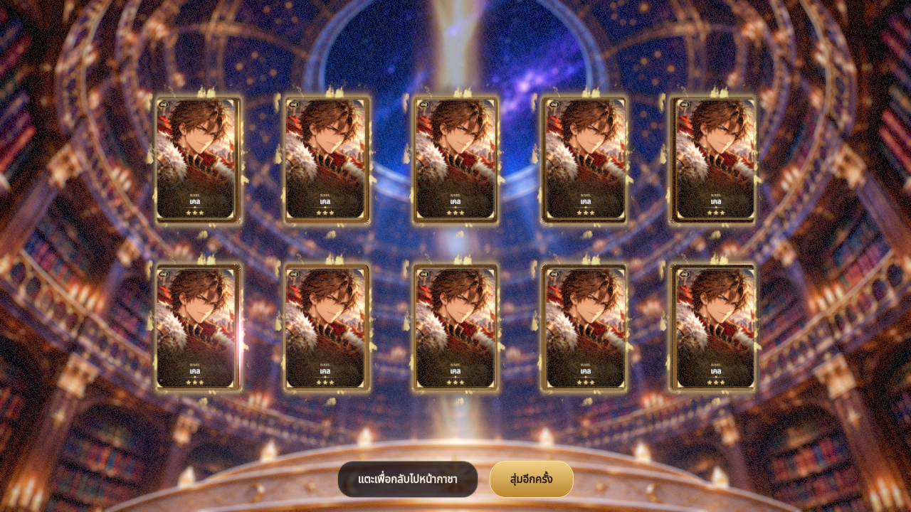
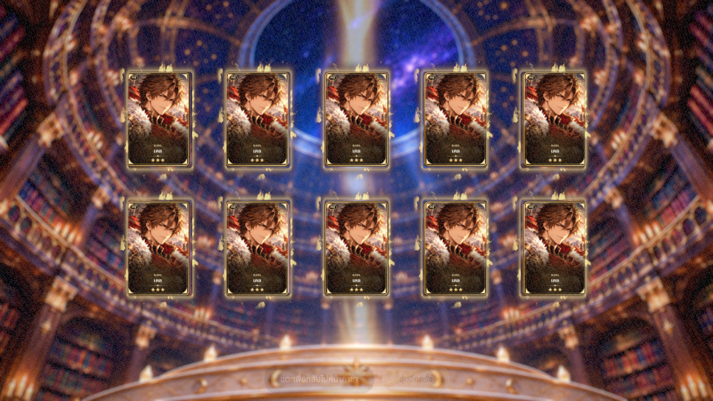
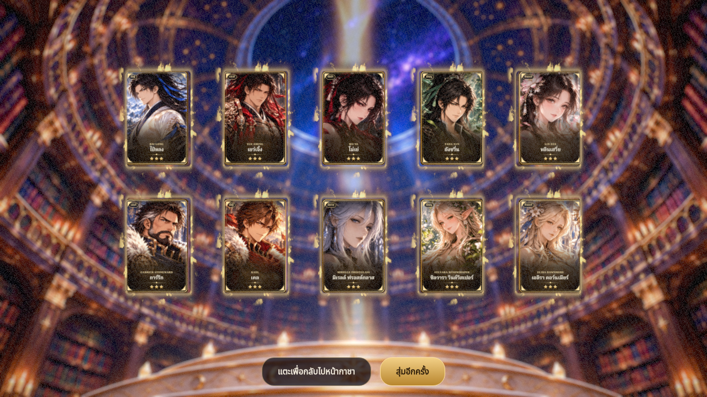
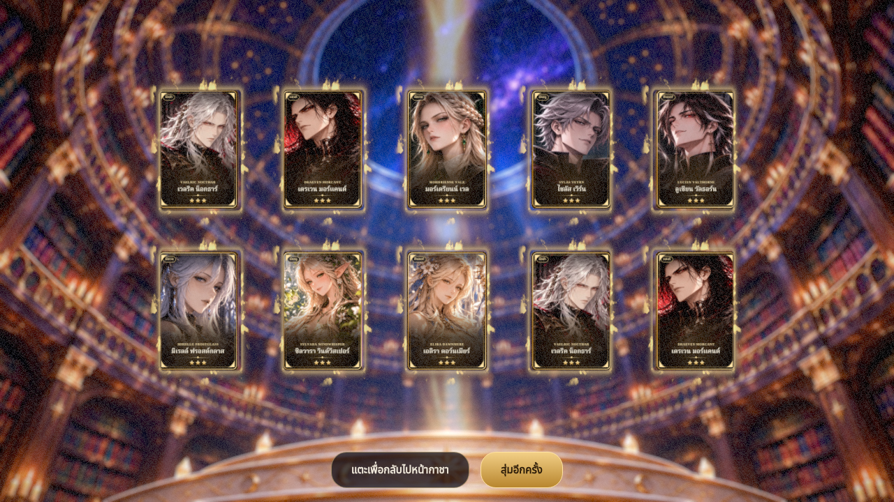

<!doctype html><html lang="th"><meta charset="utf-8"><title>Summon card layout — before / after</title><style>body{margin:24px;background:#17141c;color:#f4e8cd;font:16px/1.6 system-ui}main{max-width:1500px;margin:auto}section{display:grid;grid-template-columns:1fr 1fr;gap:20px}figure{margin:0}img{display:block;width:100%}a{color:#e7c992}h1,h2{font-weight:500}</style><main><h1>การ์ดอัญเชิญ — ขอบบาง ชื่ออยู่กึ่งกลาง เปิดแล้วอยู่นิ่ง</h1><section><figure><figcaption>ก่อนแก้ · เกมจริง 1280×720</figcaption><a href="before-10-summary.png"></a></figure><figure><figcaption>หลังแก้ · เกมจริง 1280×720</figcaption><a href="after-10-summary.png"></a></figure></section><h2>ครบ 15 ตัวละคร · ตรวจชื่อยาวและตำแหน่ง</h2><a href="roster-a-10-summary.png"></a><a href="roster-b-10-summary.png"></a><p><a href="README.md">ขอบเขตและข้อจำกัด</a> · <a href="after-report.json">รายงานการตรวจ</a></p></main></html>
